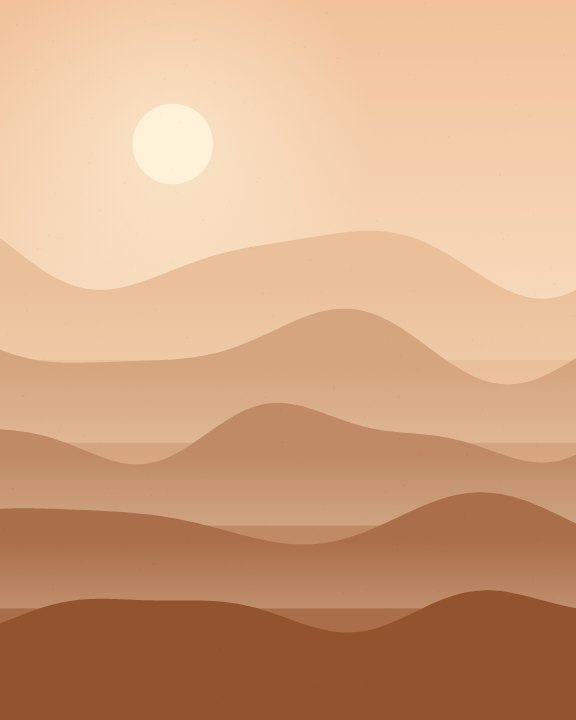
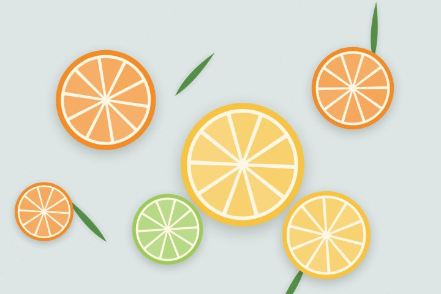
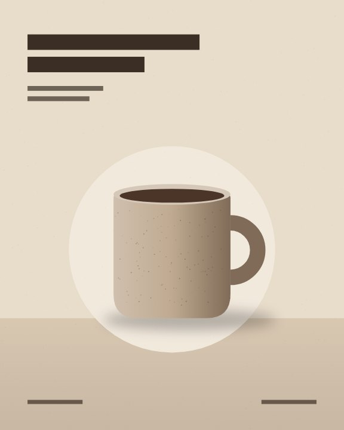
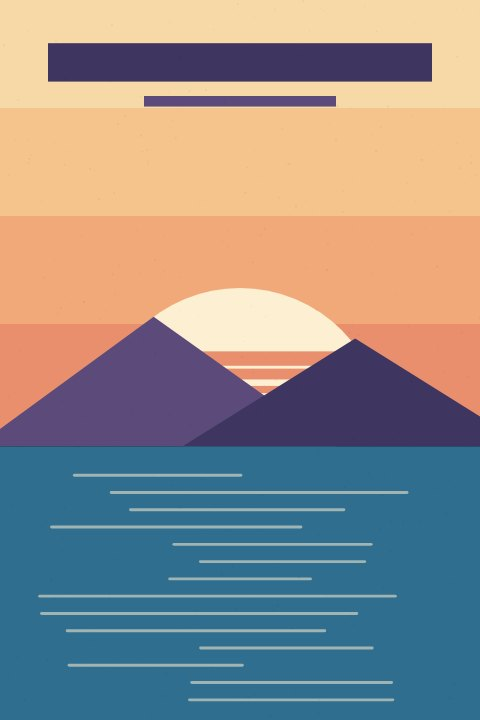
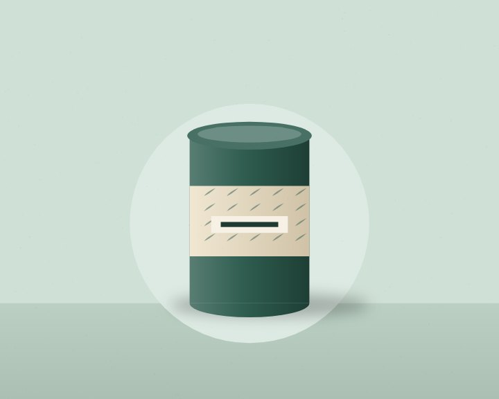
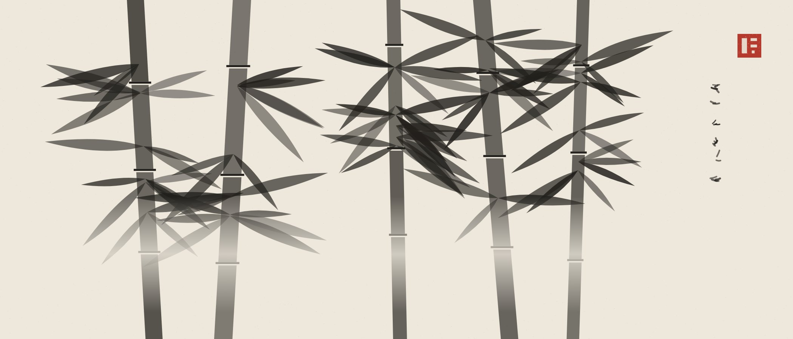

Every prompt we have tested, newest first, each printed with the frame it produced.






Panoramic ink painting of a bamboo grove on warm rice paper. A band of mist across the lower thirdA and a small red seal in the upper rightB.
● Developing frames 49–72… Frames 1–48 of 120 shown Page 1 2 3 4 5